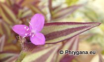

| PHRYGANA | Fauna | Flora | Galles | liste des espèces |
contact -
info - commentaires phrygana1 (at) gmail.com |
| Particularités crétoises | nouveautés | Mines | ressources naturelles |
| les Commelinaceae MIRB. de Crète (les Commelinacées) |
|
| 1a. -- Fleurs à symétrie bilatérale (zygomorphes), tous ou presque tous les pétales de couleur bleue. Étamines : 3 fertiles et (2-) 3 stériles. Plantes annuelles ou vivaces, rarement subspontanées (échappées de jardin) ..................................................................................................................... Commelina |
| 1b. -- Fleurs à symétrie radiaire (actinomorphes), les pétales de couleur bleue à pourpre, rose ou blanche. Toutes les étamines (6) fertiles. Plantes vivaces, rarement subspontanées (échappées de jardin) ........................................................................................................................................... Tradescantia |
|
|
 | ||
| Commelina communis | Tradescantia sillamontana | Tradescantia zebrina | |
| 10 juillet 2013 |
| © paul fontaine -- © Phrygana.eu 2007 -- 2013 |